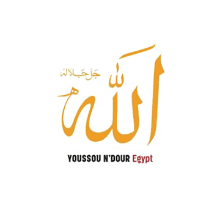

Youssou N'dour
Youssou N'dour - vocals
Babou Laye - kora
Kabou Guèye, Souka Guèye & Mama Guèye - backing vocals
Mbaye Dieye Faye - senegalise percussions(various)
The Fathy Salama Orchestra:
Юрий Каблоцкий and Midhat Abd El Sameeh - first violins
Bisheer Ewees and Василий (?) - bass violins
Mamdouh el Gebaly - oud
Abdallah Helmy - kawala
Ayman Sedky - doholla
Mostafa Abd El Azeez - arghoul
Ahmed El Gazar - sagat
Hasaneen Hindy - mizmar
Shaker - rababa
Shibl - magruna
Ramadan Mansoor - tabla
Yaser Mal Allah - various Arab Gulf percussion
Beugue Fallou Ensemble - senegalise percussions(various), backing vocals
Produced by Youssou N'dour with Fathy Salama

тарикат - духовное(и часто тайное) братство мусульман, своеобразная альтернатива улему и официальным ученым, часто выступающее в роли миссионеров Ислама.
турук - мн.ч. от тарикат.
марабут - человек, признанный святым при жизни(также называется и небольшой склеп в месте его захоронения).
[комментарии - не по порядку треков]
Allah
Альбом открывает композиция, относящаяся к традиционной религиозной форме aszhikrullah (воспоминания о Боге). Поэтому она называется просто Аллах, Бог. В ее заключительной части Youssou взывает к Abu Abdallah Muhammad ibn Yusuf al-Sanusi, великому суфийскому святому XV века, который родился в Тлемсене, Алжир. (Не следует путать его с другим знаменитым суфием Muhammad ibn Ali al-Sanusi (1787-1859), Великим Сануси, который основал тарикат в Cyrenaica, Ливия.) Аль-Сануси (Первый) был автором десятистраничного трактата tawhid (Мусульманской доктрины Единобожия), известного как Aqidat al-Sughra. В его время этот труд был одним из основных текстов в религиозных школах Северной и Восточной Африки, чем заслужил автору немеркнущую в веках славу среди африканских учителей-суфиев. Aqidat al-Sughra содержит классическую дискуссию об отношениях между внешним миром - zahir на арабском - и спрятанном от чужих глаз внутреннем духовном мире, batin на арабском.
После упоминания имени al-Sanusi Youssou переходит к восхвалению личности и происхождения современного марабута шейха Saad Bu (1848-1917), также известного как Sadibou Addara, родом из Нимзатта, Мавритания. С его именем связан рост влияния суфийской школы Qadiriyya в Сенегале, одной из наиболее распространенных турук в мировом масштабе, с началом истории, уходящим в годы жизни ее создателя, шейха Abd'al-Qadr Jilani of Baghdad (1077-1166), одной из ключевых фигур суфизма. Qadiriyya долгие годы была фундаментом жизни в Мавритании и по сей день остается ведущей религиозной силой в Мавритании и Сенегале.
Shukran Bamba
Bamba the Poet
Две песни на альбоме, посвященные памяти самого известного за пределами родины суфийского святого, шейха Amadou Bamba (1855-1927). Он основал общество суфийских Мюридов, которое сегодня насчитывает несколько миллионов последователей в Сенегале и за его пределами.
Cheikh Ibra Fall
Эта композиция отдает дань спутнику и духовному наследнику Amadou Bamba шейху Ibra Fall (1858-1930).
Touba – Daru Salaam
В песне восхваляется священный город Мюридов - Touba.
Amadou Bamba был и остается одним из самых заметных проповедников Ислама в Африке всех времен. Изначально он принадлежал к школе Qadiriyya, последователем которой был его отец, марабут Maam Mor Anta Saly, который служил qadi (духовным судьей) при дворе Lat Dior Diop, the Damel of Cayor, одного из самых почитаемых королей после обращения Мавритании в Ислам.
Жизнь Бамба, состоявшая из аскетизма, обучения, противостояния французским колонизаторам и разработки революционной религиозной доктрины была отмечена несколькими известными случаями «чуда» - освященный веками элемент святости Суфия. В его жизни было два периода жизни в изгнании(1895-1902 - Габон, 1903-1907 - Мавритания), за время которых его слава выросла до мифических размеров.
В соответствии с писаниями Abd'al-Qadr Jilani и величайшего мусульманского моралиста, имама Abu Hamid Muhammad al-Ghazali of Persia (1058-1111), на которых вырос Бамба, основу его учения составляли духовная дисциплина и моральный самоконтроль, однако с революционным элементом признания духовного смысла за физическим трудом и элемента святости в материально-экономических плодах этого труда. Бамба оставил невероятное количество сочинений, от формальной юриспруденции и теологических толкований до практических руководств верующим и даже собственной разновидности суфийской поэзии, известной на языке wolof как xasaayids. Мюриды часто исполняют его xasaayids хором.
Амаду Бамба также был известен как Serigne Touba (Мудрец из Touba) и Khadimou Rassoul (Глашатай Пророка). В контексте песни Youssou упоминает двух нынешних лидеров Мюридов - последних из оставшихся в живых сыновей Амаду Бамба, Serigne Saliou Mbacké и Serigne Mourtala Mbacké.
Преданность Ibra Fall и его талант к привлечению людей способствовали росту числа последователей учения Бамба. Сначала в St. Louis, городе в дельте реки Сенегал, а затем в западном регионе Baol Fall набирал daaras - особые группы, равно занятые обучением Корану и физической работой, - которые были частью крупных строительных и сельскохозяйственных проектов. Особенно привлекательной для новообращенных была новая доктрина Бамба о том, что труд есть привилегированный путь к Богу - Fall подавал ее как новую форму классической суфийской концепции о самоотречении как о высшем пути близости к Богу. В современном Сенегале некоторые Мюриды считают именно Ibra Fall своим духовным проводником, именуя его Baay Fall, и образуют особую группу внутри движения. В сенегальских городах daaras(изначально чисто сельские общины) появились в процессе создания dahiras, центров изучения Корана и исполнения xasaayids, а также воспитания подрастающего поколения Мюридов.
В 1887 Ibra Fall основал город Touba(около 170 км к западу от Дакара), после того, как Бамба получил видение в пустыне с приказом выстроить в этом месте новый город. Было расчищено место неподалеку от деревни Mbacké, где и начали строить город, ставший известным среди Мюридов как "прихожая рая"(верующие продолжают его так называть до сих пор). За несколько десятилетий резкого роста потока экс-патриантов Мюридов из стран Европы и Северной Америки, Touba неожиданно превратился в самый быстро-развивающийся город Восточной Африки. Ежегодное важнейшее собрание Мюридов grand mаggal собирает последователей со всего Сенегала, соседних регионов и даже отдаленных уголков мира - Мюриды считают его своим хаджем.
Mahdiyu Laye
Эта песня прославляет Seydina Limanou Laye (1843-1909), воплощение в Сенегале аль-Махди(мессия в исламской религии). Limanou Laye родился в рыбацкой деревне Lebou на полуострове Yoff, недалеко от Дакара. В школе он не учился и до 40 лет оставался неграмотным, когда на него снизошло просветление и он об'явил себя «Мессией, которого все ждали столько лет». В Коране нет толкования идеи Махди, и эта концепция присуща(и даже является стержнем) веры мусульматов Шиитов. У Сунитов она встречается только в ограниченных районах Африки, и появилась как своеобразная форма духовного протеста во времена жестокого угнетения континента колонизаторами. Один из известных примеров Махдизма - революционное движение Muhammad Ahmad против власти Турок и Египтян в западном Судане, которое началось в 1870х и существовало до подавления об'единенными британо-египетскими войсками в 1898.
На родине Limanou Laye ислам начали проповедывать за несколько десятилетий до его рождения, и когда он об'явил себя Махди, сначала десятки, а со временем тысячи Lebous признали его своим учителем. В 1887 Laye попал под трибунал французского колониального правительства за призывы к мятежу, но был оправдал судьей Gilbert Desvallon с формулировкой "учение этого марабута очень далеко от подрывных доктрин, в его основе страх перед гневом Божием, почитание родителей и преданность семье". Его сын Seydina Issa Rohou Laye (р.1949), первый калиф общины Layenne, пришел к мысли, что равно как воплощение Иисуса(пророка для Ислама) характеризовалось в Коране(4:171) как «Слово Божие», так и дух его есть Мессия. В большинстве эсхатологических суждений мусульман считается, что Иисус говорил, что вернется на землю, чтобы наследовать Махди, победить Анти-Христа и спасти истинных верующих в последний час. Доктрина Layenne учит, что в этот последний час на землю вернется Issa Laye, пройдет по волнам Атлантического океана, чтобы встретиться на берегу с верующими Layennes недалеко от деревни Ngor.
В тексте Youssou говорит не только об Issa Laye, но и о нынешнем калифе общины Maam Alassane Laye, или Maam Rane Laye, сыне Issa и внуке Limanou. В наши дни община Layenne придерживается идиосинкретической смеси общепринятой доктрины Ислама с учениями Limanou Laye и его последователей. И то, что сегодня память Limanou Laye чтят многие мусульмане Сенегала, несмотря на его маргинальный статус в прошлом, характерный признак религиозной терпимости страны.
Tijaniyya
Песня прославляет El-Hadji Malick Sy (1855-1922) и наследие сенегальской ветви суфийской школы Тиджани, которую он привел к обновлению. Тарикат Тиджани был основан Sidi Ahmed al-Tijani (1737-1815), который эмигрировал из южного Алжира в Фес, Марокко. Там он стал одним из выдающихся учителей-суфиев в странах Магриба, равно как и в Судане. При жизни его считали своим учителем многие аристократы и интеллектуалы, и слава его гремела далеко за пределами города Фес. Тиджани был столь привлекателен для новообращенных не только благодаря личной харизме аль-Тиджани и его призыву к прямому прославлению Пророка Мухаммеда, но и из-за своего относительно мало-иерархического характера. Для вступления требовалось придерживаться определенных духовных норм, не проводя перед этим долгих лет в послушании и обучении(как, к примеру, в Qadiriyya). На сегодня это одно из самых популярных реформаторских движений в исламском мире.
Baay Niasse
Этой песней отдает дань El-Hadji Ibrahima Niasse (1900-1975), «отступнику» школы Тиджани из региона Каолак(около 190 км к юго-западу от Дакара). В 1929, когда его почитали величайшим из живущих святых и прямым духовным наследником Sidi Ahmed al-Tijani, Niasse, которого также звали Sidi Barham Niasse или Baay Niasse, отрекся от правящего халифата семьи Sy и об'явил о создании собственной ветви Тиджани. При этом его интеллектуальные и экономические интересы простирались далеко за границу Сенегала. Во время хаджа 1937 он встретился с эмиром Kano, Abdullahi Bayero, и тот признал его своим учителем. Годом позже под покровительством эмира он стал во главе школы Тиджани северной Нигерии после смерти выдающегося ученого Muhammad Salga (1871-1938).
С этого момента поток пилигримов из земли Хауса, Нигерия ежегодно собирался на gаmmu общины Niasse в Каолак, что имело как духовные, так и экономические последствия для региона. Другая община последователей Niasse появилась в Гане, снова благодаря его «особым связям» с Kwame Nkrumah. Baay Niasse выступал как красноречивый адвокат идей Nkrumah, пионера пан-африканской культурной и экономической интеграции. Со временем сыновья вместе с другими его последователями сумели распространить его влияние буквально на всю Африку, об'единяя в конце колониальной эры несколько миллионов человек - безусловно крупнейшая мусульманская организация на тот момент.
Сегодня его равно вспоминают как выдающегося духовного лидера и гибкого политика, устанавливавшего межобщинные связи.
©2004 adapted by sahua. было непросто.